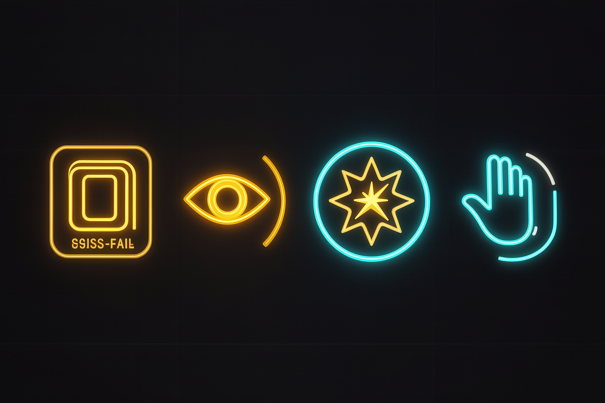

🏁 Define tu línea de llegada
Antes de ejecutar cualquier bucle, responde dos cosas: qué significa «listo» (escrito de una manera que una máquina pueda verificar) y cómo vas a comprobarlo. Esas dos respuestas son la comprobación «¿listo?» del loop: no es un detalle, sino el motor que lo detiene.
Lee el diagrama: las dos respuestas no quedan sueltas: se suman y se convierten la comprobación que el loop hace en cada vuelta. Definir «listo» y definir «cómo comprobarlo» es definir el loop.
🧩 Los 4 tipos de check
La forma de comprobarlo depende de la tarea. Hay cuatro maneras, de la más sencilla a la más humana: Functional (la máquina decide), Visual (debe verse), Criterio (rúbrica + 2.º agente) y You-decide (tú apruebas). Los siguientes temas desarrollan cada uno.
✅ Verificación funcional
La comprobación Functional es cuando una máquina responde sí o no con cero opiniones: las pruebas pasan, la app funciona, el build compila. Es el más fácil de todos: empieza por él siempre que puedas.

Qué ver: los cuatro checks, de izquierda (más automático) a derecha (más humano). El Functional es el primero: un verde/rojo que la máquina lee sin necesitarte.
Las pruebas pasan
Ejecutar la suite → «0 fallas». Sí o no, sin debate.
La app se ejecuta
Sube la app → ¿responde en el puerto? ¿Arranca sin errores?
Build compila
Compilar → "éxito" o "error en la línea X". Binario.
✓ Por qué empezar por Functional
Es incuestionable y barato: la máquina ya da la respuesta, no tienes que interpretar nada. Siempre que puedas reducir el "listo" a una prueba que se ejecuta, hazlo: es el tipo de check más confiable que existe.
👁️ Comprobación visual
A veces el resultado necesita verse para que lo evalúen: una UI, una miniatura, un diseño. Ese es el check Visual. La buena noticia: la mayoría de los agentes de hoy puede mirar imágenes o tomar una captura de pantalla y juzgar a partir de él.
✓ El agente lo ve
Toma una captura de pantalla, abre la imagen generada y la compara con lo que se pidió: «¿el botón está centrado?», «¿coinciden los colores?».
✗ Verificar solo con el código
Mirar el CSS y suponer que quedó bien es no ver el resultado: el píxel final puede estar roto aunque el código esté "bien". Para lo visual, hay que ver el píxel.
Qué ver: el agente captura la pantalla, mira y devuelve un juicio de lo que vio — no del código.
⚖️ Check Judgment
Cuando el "listo" necesita me gusta, pero si puedes describir ese gusto, usa la comprobación Criterio: tú escribes una lista de verificación (una rúbrica) y un segundo agente la califica. Es el enfoque maker→checker de la Trilha 2 aplicado a la calidad subjetiva.
⚠️ La trampa: «hasta que estés satisfecho»
«Itera hasta que quede bien» es demasiado subjetivo — el loop no puede medir si está «satisfecho» y nunca se detiene (o se detiene en el lugar equivocado).
La corrección: hazlo objetivo — «sigue iterando hasta que la métrica X = Y», por ejemplo, «itera hasta que la nota promedio de la rúbrica sea ≥ 9». Ahora hay un número que el ciclo debe perseguir.
✗ Demasiado subjetivo
«Vuelve a hacerlo hasta que quede elegante». → Sin una métrica, el loop nunca sabe si llegó a la meta.
✓ Objetivo definido por rúbrica
«Califica con esta rúbrica (0-10) e itera hasta que el promedio sea ≥ 9». → ahora hay un objetivo.
🙋 Verificación: tú decides
Cuando el paso es irreversible o si es puro gusto que ninguna rúbrica captura, usa el check You-decide: el loop pausa, tú apruebas y continúa. Es el check adecuado para pasos arriesgados: las "puertas de un solo sentido" (one-way doors), de las que no se puede volver.
▶ Copy-run: el control humano
Objetivo: indicarle al loop que pause y pida aprobación antes de cualquier acción irreversible, en lugar de actuar por su cuenta.
# Cole junto com seu prompt no Claude Code — um gate humano para portas de mêo única
# a regra de pausa (You-decide)
Pause e me pergunte ANTES de deletar, enviar ou pagar qualquer coisa.
Para essas ações, nêo decida sozinho: descreva o que vai fazer, espere meu "ok",
e só entêo execute.
# o que NêO precisa pausar
Ler arquivos, rodar testes, editar código localmente e <outras ações reversíveis>
você pode fazer direto, sem pedir.Cómo verificar: dale al agente una tarea que implique una acción arriesgada (p. ej., "limpia la carpeta X"). Confirma que para y pregunta antes de eliminar algo, en vez de borrarlo directamente. Si se detuvo y esperó tu «ok», el gate está funcionando.
💡 You-decide es poco común, pero crítico
Úsalo con moderación: pausar a cada paso acaba con la ventaja del loop. Resérvalo para lo irreversible o para gustos que ninguna métrica puede captar. Para lo demás, prefiere Functional, Visual o Judgment.
🎚️ Objetivo vs. subjetivo
La regla madre de este módulo: cuanto más objetivo sea el "listo", mejor será el loop. Un objetivo le da al loop una cifra que perseguir y un momento claro para detenerse. Lo subjetivo deja al loop perdido. Siempre que sea posible, lleva el "listo" al terreno objetivo.
🎬 Ejemplo real: la foto de Abbey Road en CSS (video de Nate)
La tarea: recrear la clásica foto de portada "Abbey Road" usando solo CSS. El criterio de "listo" se definió de forma objetiva:
- •Detener cuando la promedio de score ≥ 9 (rúbrica) O después de 8 pasadas (límite estricto).
- •Cada versión era captura de pantalla + reevaluada (Visual + Judgment combinados).
Fíjate: nota y límite. El loop no se ejecuta «hasta quedar bien»; se ejecuta hasta 9 o 8 pasadas. Ese límite estricto es el freno que impide que el loop gire para siempre.
| «Listo» subjetivo (malo) | «Listo» objetivo (bueno) |
|---|---|
| "hasta que quede elegante" | "hasta que el promedio de la rúbrica sea ≥ 9 o haya 8 pasadas" |
| "mejora el código" | "hasta que pasen el lint y las pruebas" |
| "resume bien" | "≤ 5 líneas y cubre los 3 puntos clave" |
¿Cuál de estas es la mejor definición de "listo" para un loop?
🧾 Resumen del módulo
Siguiente:
Ruta 3 — Construye tu primer loop (la secuencia de 7 pasos)